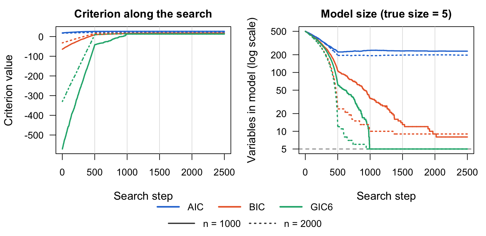
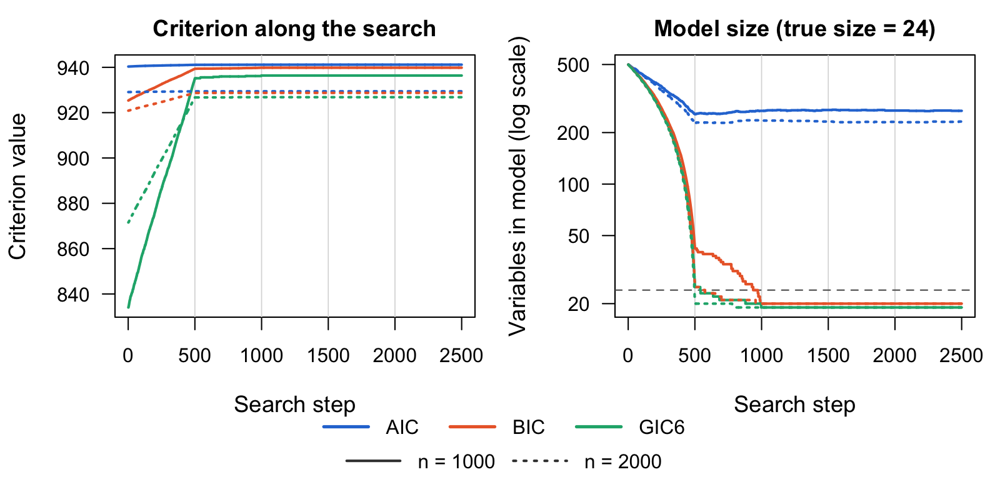
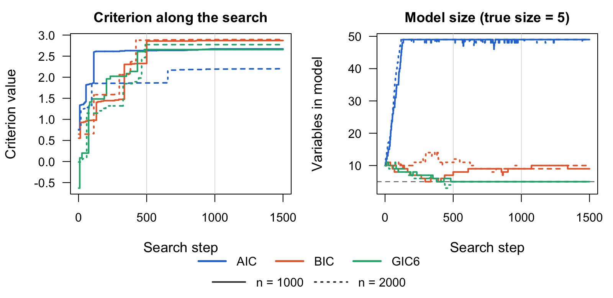
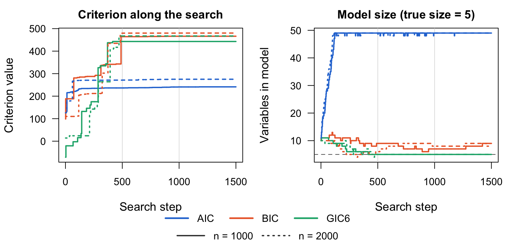
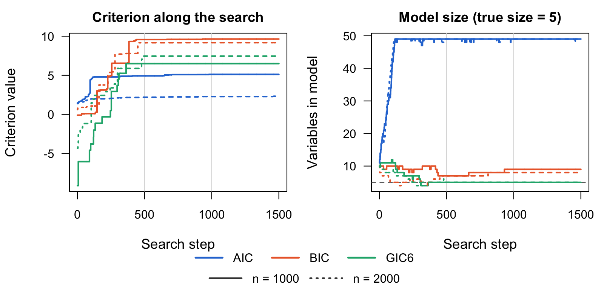

GICHighDimension is an R package for variable selection in high-dimensional regression. It searches over subsets of predictors for the one that maximizes a generalized information criterion (GIC), such as AIC, BIC, EBIC or GIC2–GIC6, using a fast Hopfield-network style coordinate search. Univariate and multivariate responses are supported, along with the common generalized linear model families.
The search engine is written in Julia and called from R through JuliaCall. It never forms the hat matrix: every proposed move is scored with a rank-one update, so a pass over thousands of candidate predictors takes milliseconds. The method is described in Xiao and Walker (2026).
Installation
Install the development version of GICHighDimension from GitHub:
devtools::install_github("yuchenxiao95/GICHighDimension")You also need Julia (≥ 1.9), which you can download from https://julialang.org/downloads/. Then connect R to Julia; the first time, also install the Julia packages the package uses:
library(GICHighDimension)
setup_julia()
install_julia_packages() # first time onlyExamples
The examples below compare three criteria on the same data. In increasing order of penalty per variable, they are AIC (), BIC () and GIC6 (). Each example simulates observations on candidate predictors and runs every search twice, on the first 1000 observations and on all 2000, to show how selection improves with more data. The Examples article (vignette("examples")) explains each step, and the Get started article (vignette("get-started")) lists all criteria and response families.
First define a few helpers. Data simulation and the search order use Julia’s random number generator, which set.seed() does not control, so set_seeds() seeds both. Run the examples in the order shown to reproduce the output.
set_seeds <- function(seed) {
set.seed(seed)
JuliaCall::julia_command(sprintf("import Random; Random.seed!(%d);", seed))
}
criteria <- c(AIC = "Calculate_AIC", BIC = "Calculate_BIC", GIC6 = "Calculate_GIC6")
sample_sizes <- c(n1000 = 1000, n2000 = 2000)
# Run the search once per criterion, on the first n observations for each n
compare_criteria <- function(X, Y, init, k, Nsim) {
lapply(sample_sizes, function(n) {
Xn <- X[1:n, ]
Yn <- if (is.matrix(Y)) Y[1:n, , drop = FALSE] else Y[1:n]
lapply(criteria, function(crit)
GICSelection(Xn, Yn, init, crit, paste0(crit, "_short"), k = k, Nsim = Nsim))
})
}
last_model <- function(fit) sort(fit$selected_coeffs[[length(fit$selected_coeffs)]])
# Size, false positives and false negatives of each final model
selection_table <- function(fits, truth) {
rows <- lapply(fits, function(by_crit) t(sapply(by_crit, function(fit) {
s <- last_model(fit)
c(size = length(s), false_pos = length(setdiff(s, truth)),
false_neg = length(setdiff(truth, s)))
})))
out <- do.call(rbind, rows)
rownames(out) <- paste(rep(names(fits), each = length(criteria)), rownames(out))
out
}Each figure shows, for every criterion, its value and the number of selected variables after each search step: solid lines for and dotted lines for . Light grey vertical lines mark a new pass over the predictors, and the dashed line marks the true model size. Criteria with larger penalties take lower values, so compare the shapes of the curves, not their heights. The script data-raw/readme_figures.R runs the code in this section and redraws the figures.
Linear model with 500 candidate predictors
Take and , with 5 true coefficients equal to 2 and the noise set for a signal-to-noise ratio of . Start every search from the full model:
set_seeds(1)
n <- 2000; p <- 500
X <- matrix(rnorm(n * p), n, p)
true_cols <- sort(sample(p, 5))
beta <- numeric(p); beta[true_cols] <- 2
Y <- LP_to_Y(X, beta, family = "Normal", std = sqrt(sum(beta^2) / 0.71))
fits <- compare_criteria(X, Y, 1:p, k = p, Nsim = 5)
selection_table(fits, true_cols)
#> size false_pos false_neg
#> n1000 AIC 230 225 0
#> n1000 BIC 8 3 0
#> n1000 GIC6 5 0 0
#> n2000 AIC 197 192 0
#> n2000 BIC 9 4 0
#> n2000 GIC6 5 0 0
GIC6 selects exactly the 5 true predictors at both sample sizes. BIC keeps all 5 but adds 3 noise variables at and 4 at : doubling does not help, because its penalty ignores the 500 candidates. AIC keeps about 200 variables at either size.
Multivariate normal
Five responses, each with its own 5 predictors and coefficients from 10 down to 0.1. Pass the response matrix as Y:
m <- 5
B <- matrix(0, p, m)
true_by_response <- vector("list", m)
for (i in 1:m) {
cols <- sort(sample(p, 5))
true_by_response[[i]] <- cols
B[cols, i] <- seq(10, 0.1, length.out = 5)
}
Y_multi <- LP_to_Y(X, B, family = "MultivariateNormal", cov_matrix = diag(m))
true_union <- sort(unique(unlist(true_by_response)))
fits <- compare_criteria(X, Y_multi, 1:p, k = p, Nsim = 5)
selection_table(fits, true_union)
#> size false_pos false_neg
#> n1000 AIC 268 245 1
#> n1000 BIC 20 0 4
#> n1000 GIC6 19 0 5
#> n2000 AIC 232 208 0
#> n2000 BIC 20 0 4
#> n2000 GIC6 19 0 5
Two responses share a predictor, so 24 predictors are truly active. BIC and GIC6 select no noise variables at either sample size. Every predictor they miss (4 for BIC, 5 for GIC6) has a coefficient of 0.1, which is too small to detect with 1000 or 2000 observations. AIC finds all 24 at , but inside a model of 232 variables.
Generalized linear models
For a non-Gaussian response, map it to the linear-predictor scale with Y_to_LP(), select with GICSelection(), and then fit the selected model with Beta_estimate(). The GLM examples reuse the design matrix X from above (, ), with 5 true predictors, and start each search from the first 10 columns.
set_seeds(2)
true_cols <- c(3, 17, 42, 88, 150)
beta <- numeric(p); beta[true_cols] <- c(1, -1, 0.8, -0.8, 0.6)
compare_glm <- function(Y, ...) compare_criteria(X, Y_to_LP(Y, ...), 1:10, k = 50, Nsim = 3)Poisson regression
y_pois <- LP_to_Y(X, beta, family = "Poisson")
fits <- compare_glm(y_pois, family = "Poisson")
selection_table(fits, true_cols)
#> size false_pos false_neg
#> n1000 AIC 49 45 1
#> n1000 BIC 9 4 0
#> n1000 GIC6 5 0 0
#> n2000 AIC 49 45 1
#> n2000 BIC 10 5 0
#> n2000 GIC6 5 0 0
# Coefficients of the GIC6 model for n = 2000, intercept first
round(Beta_estimate(X[, last_model(fits$n2000$GIC6)], y_pois, family = "Poisson"), 2)
#> [1] -0.03 1.00 -1.01 0.79 -0.80 0.62
Binomial counts (10 trials)
y_binom <- LP_to_Y(X, beta, family = "Binomial", n_trials = 10)
fits <- compare_glm(y_binom, family = "Binomial", n_trials = 10)
selection_table(fits, true_cols)
#> size false_pos false_neg
#> n1000 AIC 49 47 3
#> n1000 BIC 9 4 0
#> n1000 GIC6 5 0 0
#> n2000 AIC 49 46 2
#> n2000 BIC 8 3 0
#> n2000 GIC6 5 0 0
Multinomial (three categories)
The coefficients form a matrix, and category 3 is the baseline:
B_mn <- matrix(0, p, 2)
B_mn[true_cols, 1] <- 1.5
B_mn[true_cols, 2] <- c(-1.5, 1.5, -1.5, 1.5, -1.5)
y_mn <- LP_to_Y(X, B_mn, family = "Multinomial", n_categories = 3)
fits <- compare_glm(y_mn, family = "Multinomial", n_categories = 3)
selection_table(fits, true_cols)
#> size false_pos false_neg
#> n1000 AIC 49 47 3
#> n1000 BIC 9 4 0
#> n1000 GIC6 5 0 0
#> n2000 AIC 49 48 4
#> n2000 BIC 8 3 0
#> n2000 GIC6 5 0 0
In all three GLMs, GIC6 selects exactly the 5 true predictors at both sample sizes. BIC keeps the true predictors but adds 3 to 5 noise variables, with no clear gain from doubling . AIC grows the model until it hits the size cap (k = 50, so at most 49 variables) and misses 1 to 4 true predictors.